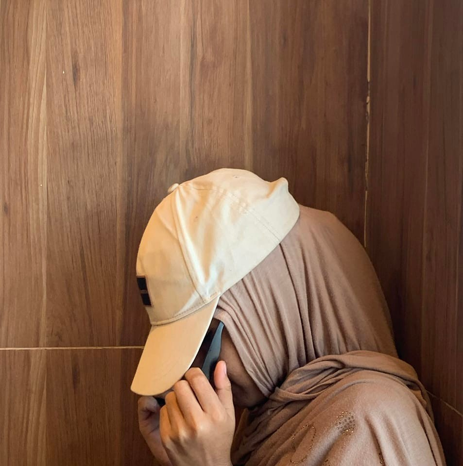
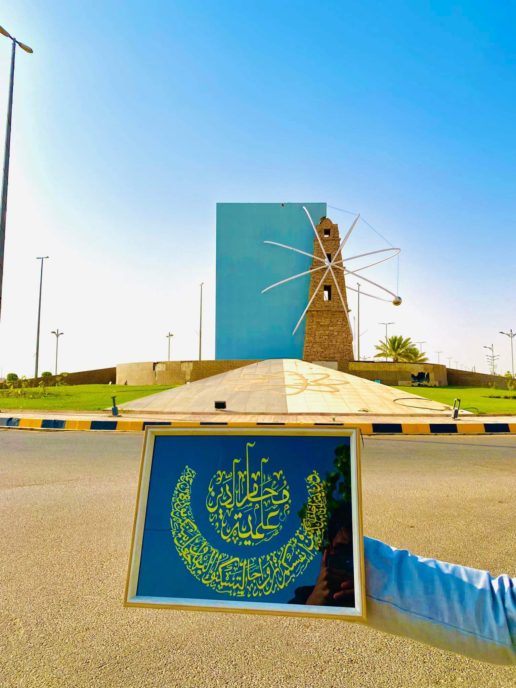
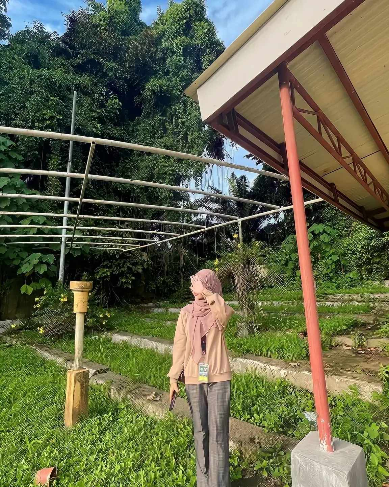

Tayba abdullah.
Arabic Calligrapher.
 My journey as a small business Arabic calligrapher
In the heart of a serene Quran learning center, I embarked on a transformative journey that would shape my life in ways I never imagined. For three years, I immersed myself in the teachings of the Quran, surrounded by the beauty of its verses and the tranquility of a space dedicated to spiritual growth. This was not just a period of learning; it was a time of profound self-discovery and artistic evolution. A Journey of Isolation and Growth Isolation from Society: For three years, I chose to step away from the hustle and bustle of everyday life. The Quran learning center became my sanctuary, a place where I could focus solely on my spiritual and artistic pursuits without the distractions of the outside world. Deepening My Connection with the Quran: Each day, I delved into the verses of the Quran, absorbing their meanings and reflecting on their teachings. This immersion not only enriched my understanding of Islam but also inspired my artistic expression. The Birth of My Calligraphy Business.
Finding Purpose in Art: To combat the monotony of isolation, I turned to Arabic calligraphy. This ancient art form became my passion and my outlet. I began to practice diligently, honing my skills and experimenting with different styles.
Transforming Passion into Business: As my proficiency grew, I realized that my calligraphy could serve a greater purpose. I decided to turn my passion into a business, creating beautiful pieces of art that reflected the beauty of the Quran. This venture not only provided me with a sense of purpose but also allowed me to share my love for the Quran with others. Mastery and Inspiration
Achieving Mastery: After years of dedication, I mastered the intricate art of Arabic calligraphy. Each stroke of the pen became a meditation, a way to connect with the divine words of the Quran. My work began to gain recognition, and I found joy in teaching others the art of calligraphy.
Inspiring Others: Through my journey, I aimed to inspire others to explore their own passions and find beauty in their pursuits. I held workshops at the Quran learning center, encouraging students to express their spirituality through art. The joy of seeing others discover their talents was immensely fulfilling. Reflection on My Journey
A Life Transformed: My three years in the Quran learning center were not just about mastering calligraphy; they were about transforming my life. I emerged not only as a skilled calligrapher but also as a person deeply connected to my faith and my community.
A Message of Hope: My story serves as a reminder that isolation can lead to profound growth and that pursuing one's passion can create opportunities for connection and inspiration. I encourage others to embrace their journeys, no matter how solitary they may seem, for they may lead to unexpected and beautiful destinations.
My Skills
CALLIGRAPHY
Projects Done
Happy Clients
My Price
- Basic
- size 8.5'11'
- Simple Edging
- Thuluth font
- taybaabdullah07@gmail.com
-
200 pesos
fixed price every frame
- Pro
- Frame Size 20'15
- Elegant Edging
- mixed Thuluth And Daywanie
- taybaabdullah0@gmail.com
-
700-800 pesos
Price Per Frame
My Reputation
Tayba Bansao Abdullah.
Theres no elevator for success , you need to take the stares.
My Photos
Contact Me
Bulit ,Datu Montawal,Maguindanao South
Phone: 09366969644/09638131762
Email: taybaabdullah@gmail.com
Let's get in touch. Send me a message: